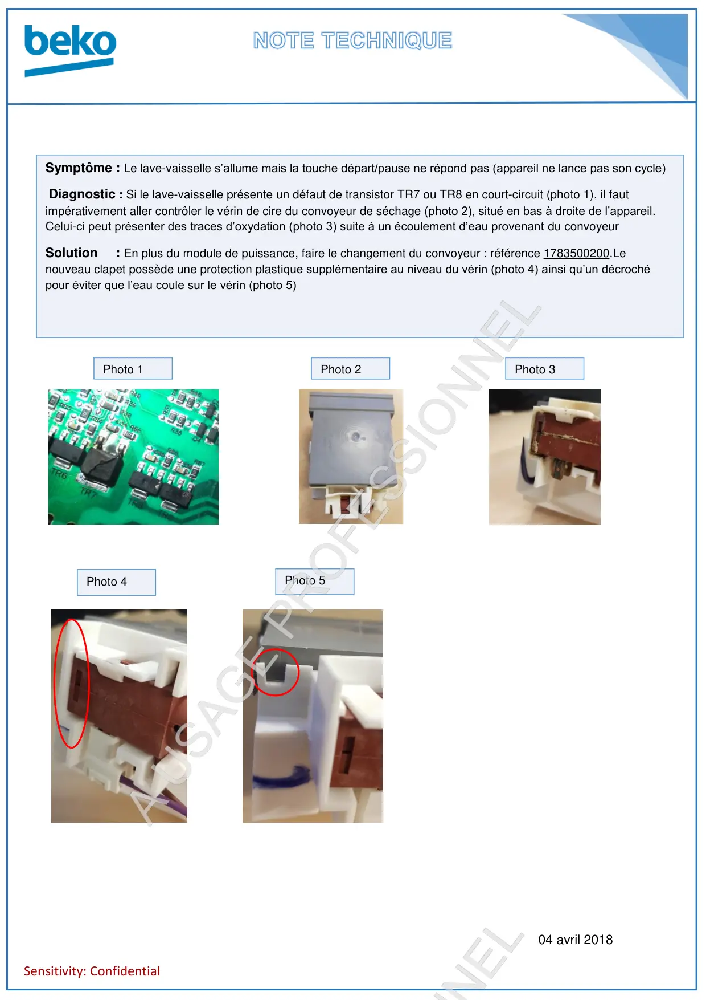
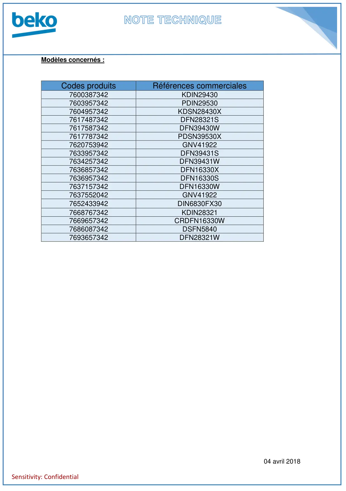

Verrin de cire clapet de séchage DFN16330 et CRDFN16330

04 avril 2018Sensitivity: ConfidentialSymptôme : Le lave-vaisselle s’allume mais la touche départ/pause ne répond pas (appareil ne lance pas son cycle)Diagnostic : Si le lave-vaisselle présente un défaut de transistor TR7 ou TR8 en court-circuit (photo 1), il fautimpérativement aller contrôler le vérin de cire du convoyeur de séchage (photo 2), situé en bas à droite de l’appareil.Celui-ci peut présenter des traces d’oxydation (photo 3) suite à un écoulement d’eau provenant du convoyeurSolution : En plus du module de puissance, faire le changement du convoyeur : référence 1783500200.Lenouveau clapet possède une protection plastique supplémentaire au niveau du vérin (photo 4) ainsi qu’un décrochépour éviter que l’eau coule sur le vérin (photo 5)Photo 1Photo 2Photo 3Photo 4Photo 5
1 / 2
04 avril 2018Sensitivity: ConfidentialModèles concernés :Codes produitsRéférences commerciales7600387342KDIN294307603957342PDIN295307604957342KDSN28430X7617487342DFN28321S7617587342DFN39430W7617787342PDSN39530X7620753942GNV419227633957342DFN39431S7634257342DFN39431W7636857342DFN16330X7636957342DFN16330S7637157342DFN16330W7637552042GNV419227652433942DIN6830FX307668767342KDIN283217669657342CRDFN16330W7686087342DSFN58407693657342DFN28321W
2 / 2